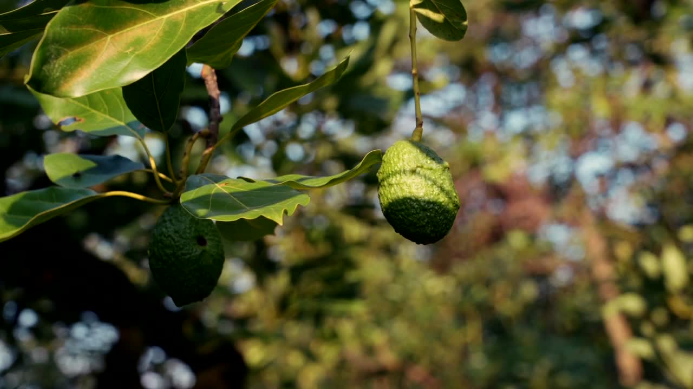
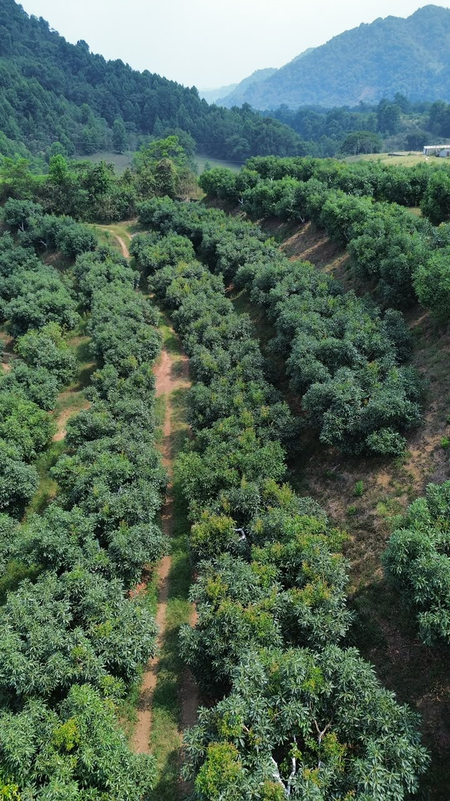

Huatusco, Veracruz · desde 2016
Aguacate Hass Méndez de la finca.
Producimos y comercializamos fruto fresco, con respeto al campo y al medio ambiente. Calidad que se cuida desde el árbol.
- 110 hade Hass Méndez
- 17,000árboles
- 60en la finca

La finca
Campo, selección y frío. En Huatusco.
Finca Pastoria SPR de RL produce y comercializa aguacate Hass Méndez. Amor por el campo, respeto por el medio ambiente y el gusto de sacar fruta de calidad.
- 110 ha de Hass Méndez
- 1,300–1,500 msnm
- 5.5 t/ha rendimiento
- 2016 inicio de operaciones
Carretera Huatusco a Elotepec Km 2.2, Huatusco, Veracruz. Atención de 8:00 a 18:00.
Aguacate Hass Méndez
Fruto fresco, empacado a la medida.
Baya oval, cáscara de verde a púrpura oscuro, pulpa firme y oleica. Temporada de mayo a febrero. Presentación según lo que pida el cliente.
De cerca
La finca en imágenes.
Selecciona una fotografía para ampliarla.


Caja10 kg
Anaquel15–20 días
Guarda3–7 °C
Humedad85–90%
TemporadaMay–Feb
Presentaciones
- Fresco
- Empacado
- Caja de plástico 10 kg
- Según necesidad del cliente
Del corte al frío
Del campo a la entrega.
- 01
Corte
Se corta el fruto en campo, de mayo a febrero.
- 02
Traslado
Pasa de la huerta a la bodega.
- 03
Selección
Se revisa y se separa en área de selección.
- 04
Frío
Entra a cámara. Empaque y salida según el pedido.
- 05
Empaque
Caja de 10 kg, o la presentación que pida el cliente.
- 06
Entrega
Córdoba, Xalapa, Puebla y Ciudad de México.
Comercial
Se cotiza, no se publica precio.
Menudeo, mayoreo, restaurantes, supermercados y centrales de abasto. Pedidos especiales y entregas según el cliente.
Hass Méndez
Fruta fresca
Persea americana, de Huatusco. Pulpa firme, cáscara rugosa, semilla grande.
Cotización según volumen CotizarMercados
Dónde llega
Córdoba, Xalapa, Puebla y Ciudad de México. Entrega según acuerdo.
Frecuencia y destino a la medida CotizarPara cotizar: cantidad, frecuencia, tipo de empaque y destino. Ventas: Valentina Penagos de la Llave.
Ficha técnica
Hass Méndez, listo para viajar.
Caja de plástico de 10 kg. 100 cajas por pallet, 20 pallets por embarque. Transporte sujeto a disponibilidad. Certificación en proceso.
- USA32, 36, 40, 48, 60, 70, 84
- Canadá12, 14, 16, 18, 22, 24, 26
- Japón18, 20, 24, 30, 35
Campo
Respeto al suelo y al entorno.
Suelo
Manejo como bioregeneradores de suelo.
Aplicación
Sin riego. Los productos se aplican a mano.
Calidad
Misión: producir fruta de calidad.
Visión
La exportación. Certificación en proceso.
La finca hoy
Desde 2016, hacia afuera.
- 2016Inicia operaciones Finca Pastoria.
- HuatuscoCarretera a Elotepec Km 2.2.
- 110 haTodas en Hass Méndez.
- 17,000Árboles en producción.
- 2027Meta de 600 toneladas.
- 2030Meta de 1,300 toneladas.
Cotización
Cantidad, frecuencia y destino.
Atención de 8:00 a 18:00. WhatsApp y correo.
Contacto
Ventas, de 8 a 18.
Valentina Penagos de la Llave
Departamento de ventas
pllvalentina@hotmail.com
Finca Pastoria SPR de RL
jjpenagos@yahoo.com.mx
Carretera Huatusco a Elotepec Km 2.2
Huatusco, Veracruz